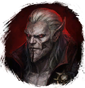
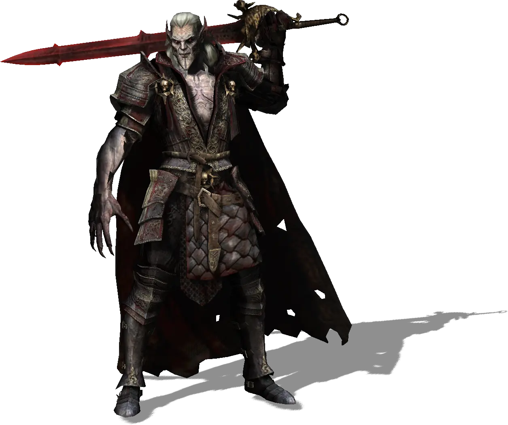

Открыть в интерактивной вики →

| Уровень | 260 |
|---|---|
| Зоны атаки | ближняя, дальняя, ментальная |
| Шанс дропа 100% — уровни | -- |
| Шанс дропа 90% — уровни | -- |
| Шанс дропа 70% — уровни | -- |
| Группа боссов | Ужас |
| Сила (PvE) | 63 982 |
| Аспект арены | Cosani |
| Здоровье | 750 000 |
| Мана | 44 000 |
| Выносливость | 44 000 |
Команда


Навыки


Дроп


Требования для входа
все сложности:  Кровь вампира
Кровь вампира
Кровь вампираПуть по картам
Путь

Бездна
Аспект

Cosani
Статистика

Уровень: 260
") 63 982
63 982
Здоровье:  + 750 000
+ 750 000
+ 750 000Мана: 44 000
Выносливость: 44 000
Умения
| Кровотечение Заражение Отравление Ранение Обычная атака | Туча летучих мышей Цунами крови Волна крови | Теневая аура Аура Ужаса Групповой укол куклы Оглушение Отупление Булавка в глаз Укол куклы Ярость |
Иммунитеты / особые умения
| Кровавая жертва Устойчивость к колющему урону Устойчивость к дробящему урону Устойчивость к рубящему урону Устойчивость перед лицом смерти Устойчивость к обездвиживанию Призыв: Хеморф Призыв: Кровотень |
Локация
Монастырь Вольхарда